fish
ɑroː आरोऽ N सं. a kind of fish; एक प्रकार की मछली. SD: fish, मछली.
ɑrɔːʈɔ आरौऽटौ MORPH: ɑ-rɔːʈɔ. N सं. flying fish; उड़न मछली. širo-rɔtɔː शीरोरौतौऽ. flying fish of the sea. समुद्र की उड़न मछली. SD: fish, मछली.
bɑrɑŋo बाराङो N सं. a kind of fish; एक प्रकार की मछली. SD: fish, मछली.
bɑːʈom बाऽटोम N सं. a kind of dangerous fish; एक प्रकार की ख़तरनाक मछली. SD: fish, मछली.
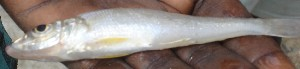 |
beloi बेलोई VAR: beloɛ बेलोऐ. N सं. a kind of fish; एक प्रकार की मछली. SD: fish, मछली.
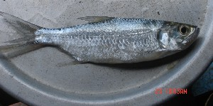 |
berɛ बेरै N सं. Parshaw fish; एक प्रकार की मछली. SD: fish, मछली.
bɛːlcɑy बैऽल्चाय N सं. Baluwa fish; एक प्रकार की मछली. SD: fish, मछली.
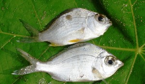 |
bikʰir बीखीर N सं. a kind of fish; एक प्रकार की मछली. SD: fish, मछली.
 bol2 बोल N सं. Bam fish; बाम मछली. SD: fish, मछली. SEE: bol1 ‘cane’ ‘बेंत बोलhm:{1}’; bol3 ‘rope’ ‘रस्सी बोलhm:{3}’; bol4 ‘run away’ ‘भाग जाना बोलhm:{4}’; bol5 ‘snake’ ‘सांप बोलhm:{5}’; bol6 ‘tree’ ‘पेड़ बोलhm:{6}’.
bol2 बोल N सं. Bam fish; बाम मछली. SD: fish, मछली. SEE: bol1 ‘cane’ ‘बेंत बोलhm:{1}’; bol3 ‘rope’ ‘रस्सी बोलhm:{3}’; bol4 ‘run away’ ‘भाग जाना बोलhm:{4}’; bol5 ‘snake’ ‘सांप बोलhm:{5}’; bol6 ‘tree’ ‘पेड़ बोलhm:{6}’.
bonoro बोनोरो N सं. a kind of fish (Kokkari fish); कोक्कारी मछली. SD: fish, मछली.
borop बोरोप VAR: borɔːt बोरौऽत. N सं. a kind of fish; शंकर मछली. SD: fish, मछली.
bɔl बौल N सं. a freshwater fish; एक प्रकार की मीठे पानी की मछली. SD: fish, मछली.
bɔroʈ बौरोट N सं. a variety of Manta ray with a long tail; लंबी पूंछ वाली शंकर मछली. SD: fish, मछली.
 bullu1 बूल्लू N सं. Jellyfish; जेली मछली. SD: fish, मछली. SEE: bullu2 ‘worm’ ‘कीड़ा बूल्लूhm:{2}’.
bullu1 बूल्लू N सं. Jellyfish; जेली मछली. SD: fish, मछली. SEE: bullu2 ‘worm’ ‘कीड़ा बूल्लूhm:{2}’.
bulto बूलतो N सं. Kokkari fish, of big size; बड़े आकार की कोक्कारी मछली. SD: fish, मछली.
buːr बूऽर N सं. a kind of fish; एक प्रकार की मछली. SD: fish, मछली.
buːrtʰo बूऽरथो VAR: bʰurto भूरतो; burtɔ बूरतौ. N सं. a kind of fish; कोक्कारी मछली. SD: fish, मछली.
buːrul बूऽरूल N सं. a white Bedhi fish; सफ़ेद बेधी मछली. SD: fish, मछली.
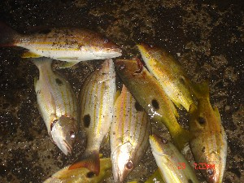 |
buʈɔiŋ बूटौईङ N सं. a kind of fish with a black dot; टिकुली मछली. SD: fish, मछली.
cɑetotcɔʈɔ चाएतोतचौटौ MORPH: cɑe-tot-cɔʈɔ. N सं. fish-hook; कांटा. SD: tool, औज़ार, fish, मछली.
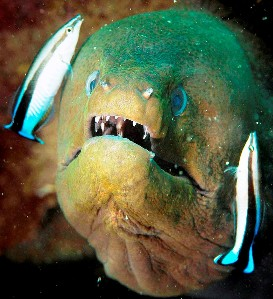 |
 cɑlemo1 चालेमो N सं. Moray eel; एक प्रकार की मछली. SD: fish, मछली. NT: Found in freshwater. मीठे पानी में पाए जाने वाली मछली जो सांप की तरह दिखती है।. SEE: cɑlemo2 ‘snake’ ‘सांप चालेमोhm:{2}’.
cɑlemo1 चालेमो N सं. Moray eel; एक प्रकार की मछली. SD: fish, मछली. NT: Found in freshwater. मीठे पानी में पाए जाने वाली मछली जो सांप की तरह दिखती है।. SEE: cɑlemo2 ‘snake’ ‘सांप चालेमोhm:{2}’.
 cɑmu चामू N सं. clown fish; एक प्रकार की मछली. SD: fish, मछली.
cɑmu चामू N सं. clown fish; एक प्रकार की मछली. SD: fish, मछली.
cɑːo चाऽओ N सं. rain fish; वर्षा की मछली. SD: fish, मछली.
cɛʈʰerɑː चैठेराऽ N सं. Triggerfish; मछली जो पत्थरों के समीप पाई जाती है. Balistapus undulatus. SD: fish, मछली. NT: It lives near rocks and is hunted with arrows which are aimed at its neck. पत्थरों और चट्टानों के पास रहती है। इसकी गर्दन पर तीर मार कर इसका शिकार किया जाता है।.
cirɔːʈɛːʈ चीरौऽटैऽट N सं. Surmai fish; सुरमई मछली. SD: fish, मछली.
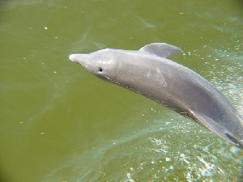 |
 coɑ चोआ N सं. dolphin; डौल्फिन मछली. SD: fish, मछली.
coɑ चोआ N सं. dolphin; डौल्फिन मछली. SD: fish, मछली.
coːnɔ चोऽनौ N सं. Kawha fish; काव्हा मछली. SD: fish, मछली.
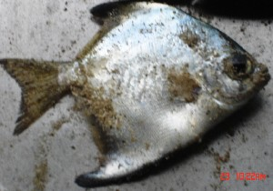 |
 cɔbɑ चौबा VAR: cowbɑ चोवबा. N सं. a kind of thorny fish; एक प्रकार की कांटे वाली मछली. SD: fish, मछली.
cɔbɑ चौबा VAR: cowbɑ चोवबा. N सं. a kind of thorny fish; एक प्रकार की कांटे वाली मछली. SD: fish, मछली.
cɔm4 चौम N सं. shark, small; छोटी शार्क मछली. SD: fish, मछली. SEE: cɔm1 ‘basket’ ‘टोकरी चौमhm:{1}’; cɔm2 ‘betelnut’ ‘सुपारी चौमhm:{2}’; cɔm3 ‘pointed object, any’ ‘नुकीला औज़ार, कोई भी चौमhm:{3}’; cɔm5 ‘stick, wooden’ ‘छड़, लकड़ी की चौमhm:{5}’; cɔm6 ‘tree’ ‘पेड़ चौमhm:{6}’.
 cɔp1 चौप VAR: cop चोप. N सं. a kind of fish; एक प्रकार की मछली. SD: fish, मछली. SEE: cɔp2 ‘fish’ ‘मछली चौपhm:{2}’; cɔp3 ‘tree’ ‘पेड़ चौपhm:{3}’; cɔp4 ‘weight’ ‘वज़न चौपhm:{4}’.
cɔp1 चौप VAR: cop चोप. N सं. a kind of fish; एक प्रकार की मछली. SD: fish, मछली. SEE: cɔp2 ‘fish’ ‘मछली चौपhm:{2}’; cɔp3 ‘tree’ ‘पेड़ चौपhm:{3}’; cɔp4 ‘weight’ ‘वज़न चौपhm:{4}’.
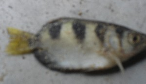 |
 cɔro2 चौरो VAR: coːrɔ चोऽरौ. N सं. a type of fish; एक प्रकार की मछली. SD: fish, मछली. SEE: cɔro1 ‘downward flow’ ‘नीचे बहना चौरोhm:{1}’.
cɔro2 चौरो VAR: coːrɔ चोऽरौ. N सं. a type of fish; एक प्रकार की मछली. SD: fish, मछली. SEE: cɔro1 ‘downward flow’ ‘नीचे बहना चौरोhm:{1}’.
 |
ɖiʈʰu डीठू N सं. a kind of fish; स्याही मछली. SD: fish, मछली.
 |
 ɖiucɔm डीऊचौम N सं. big dangerous shark known to topple boats; विशाल ख़तरनाक शार्क जो नाव भी उलट देती है. SD: fish, मछली.
ɖiucɔm डीऊचौम N सं. big dangerous shark known to topple boats; विशाल ख़तरनाक शार्क जो नाव भी उलट देती है. SD: fish, मछली.
ɖiutɑrɑʈɛt1 डीऊताराटैत MORPH: ɖiu-tɑrɑ-ʈɛt. N सं. starfish; तारा मछली. SD: fish, मछली. SEE: ɖiutɑrɑʈɛt2 ‘sun; sunlight’ ‘सूर्य; धूप डीऊताराटैतhm:{2}’.
ɖup डूप N सं. Khawha fish; खौहा मछली. SD: fish, मछली.
ekkɑːcoːme एक्काऽचोऽमे N सं. respiratory organs, of the fish; मछली का सांस लेने वाला अंग. SD: body part term, शारीरिक अंग शब्दावली, fish, मछली.
erbɑt1 एरबात MORPH: er-bɑt. VAR: erbɑːʈ एरबाऽट. N सं. fin; सुफना; मछली का पंख; मछली का पिछला हिस्सा. SD: fish, मछली, body part term, शारीरिक अंग शब्दावली. SEE: erbɑt2 ‘penis’ ‘लिंग एरबातhm:{2}’.
 etcɛ एतचै MORPH: et-cɛ. VAR: et-ce एतचे. N सं. gill of river fish; नदी की मछली का गलफड़ा. SD: fish, मछली, body part term, शारीरिक अंग शब्दावली.
etcɛ एतचै MORPH: et-cɛ. VAR: et-ce एतचे. N सं. gill of river fish; नदी की मछली का गलफड़ा. SD: fish, मछली, body part term, शारीरिक अंग शब्दावली.
etcol एतचोल MORPH: et-col. VAR: etcor एतचोर. MORPH: et-cor. N सं. fish gill; मछली का गलफड़ा. SD: body part term, शारीरिक अंग शब्दावली, fish, मछली.
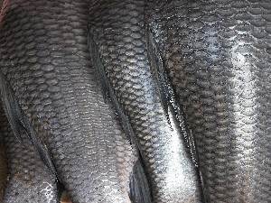 |
etkɔbo3 एतकौबो MORPH: et-kɔbo. N सं. skin; fish skin; खाल; मछली की खाल. SD: fish, मछली, body part term, शारीरिक अंग शब्दावली. SEE: etkɔbo1 ‘bark’ ‘छाल एत्कौबोhm:{1}’; etkɔbo2 ‘shell’ ‘सीपी एत्कौबोhm:{2}’.
etɲe एत्ञ्ये MORPH: et-ɲe. N सं. spines; मछली का बाहरी कांटा. SD: body part term, शारीरिक अंग शब्दावली, fish, मछली.
fɑːrɑːŋɔ फाऽराऽङौ N सं. red Kokkari fish; लाल कोक्कारी मछली. SD: fish, मछली.
fikku फीककू N सं. Badder fish; बाद्दर मछली. SD: fish, मछली.
foroːʈ फोरोऽट VAR: fɑːro फाऽरो; fɑroː आरोऽ. N सं. Parshaw fish; एक प्रकार की मछली. SD: fish, मछली.
fɔːtɔɲ फौऽतौञ N सं. red Bedki fish; लाल बेदकी मछली. SD: fish, मछली.
 inɛc ईनैच N सं. freshwater fish; मीठे पानी की मछली. SD: fish, मछली.
inɛc ईनैच N सं. freshwater fish; मीठे पानी की मछली. SD: fish, मछली.
irulu2 ईरूलू MORPH: i-rulu. N सं. eyes, of fish; मछली की आंख. SD: fish, मछली, body part term, शारीरिक अंग शब्दावली. SEE: irulu1 ‘blade, of a rudder’ ‘फाल, पतवार का ईरूलूhm:{1}’.
 |
 jemo जेमो N सं. Hammerhead shark; शार्क मछली. SD: fish, मछली. NT: One of the most dangerous sharks. एक ख़तरनाक शार्क मछली जिसका सिर हथौड़े की शक्ल का होता है।.
jemo जेमो N सं. Hammerhead shark; शार्क मछली. SD: fish, मछली. NT: One of the most dangerous sharks. एक ख़तरनाक शार्क मछली जिसका सिर हथौड़े की शक्ल का होता है।.
 |
jikoːrɔk जीकोऽरौक VAR: jikorɔp जीकोरौप. N सं. Kokkari fish; कोक्कारी मछली. SD: fish, मछली.
jilicoŋ जीलीचोङ MORPH: jili-coŋ. Etym: Bo. N सं. a kind of fish; एक प्रकार की मछली. SD: fish, मछली. NT: In Sare, this fish is called ‘Komar’. सारे भाषा में इस मछली को कोमार कहते हैं।.
 jukʰul2 जूखूल VAR: jukʰule जूखूले; jukʰur जूखूर. N सं. a type of fish; moray eel; एक प्रकार की मछली. SD: fish, मछली. NT: Found in both salt water and freshwater. ईल मछली जो मीठे पानी व खारे पानी दोनों में मिलती है।. SEE: jukʰul1 ‘end/corner of a boat’ ‘सिरा, नाव का जूखूलhm:{1}’.
jukʰul2 जूखूल VAR: jukʰule जूखूले; jukʰur जूखूर. N सं. a type of fish; moray eel; एक प्रकार की मछली. SD: fish, मछली. NT: Found in both salt water and freshwater. ईल मछली जो मीठे पानी व खारे पानी दोनों में मिलती है।. SEE: jukʰul1 ‘end/corner of a boat’ ‘सिरा, नाव का जूखूलhm:{1}’.
kʰɑrne खारने N सं. a variety of Manta ray with stingers on the back and not on the tail; एक प्रकार की शंकर मछली जिसकी कमर पर कांटे होते हैं. SD: fish, मछली.
 |
 kɑʈɑɲterulu काटाञ्तेररूलू MORPH: kɑʈɑɲ-ter-ulu. N सं. starfish; तारा मछली. SD: fish, मछली.
kɑʈɑɲterulu काटाञ्तेररूलू MORPH: kɑʈɑɲ-ter-ulu. N सं. starfish; तारा मछली. SD: fish, मछली.
 |
kɛrɛŋ1 कैरैङ VAR: kɛreŋ कैरेङ. N सं. Bol fish; whale; बोल मछली; एक प्रकार की ह्वेल. SD: fish, मछली. SEE: kɛrɛŋ2 ‘shark’ ‘शार्क; ह्वेल कैरैङhm:{2}’.
 |
kɛrɛŋ2 कैरैङ VAR: kɛreŋ कैरेङ. N सं. a kind of shark; एक प्रकार की शार्क. SD: fish, मछली. SEE: kɛrɛŋ1 ‘fish; whale’ ‘मछली; ह्वेल कैरैङhm:{1}’.
kim कीम VAR: kʰim खीम. N सं. Shankar fish; शंकर मछली. SD: fish, मछली. NT: This fish is like the ‘tɑrɑbol’, but it has a bad odor and is not edible. ‘ताराबोल’ मछली जैसी, लेकिन बहुत बदबूदार और अखाद्य।.
 |
kole ceo कोले चेओ N सं. Silver Sweetlips fish; एक प्रकार की मछली जिसके होंठ का रंग चांदी जैसा होता है. SD: fish, मछली.
komɑr कोमार Etym: North Andaman; उत्तरी अण्डमान. N सं. a kind of sea fish; एक प्रकार की समुद्री मछली. SD: fish, मछली.
kɔl कौल N सं. Shankar fish; शंकर मछली. SD: fish, मछली. NT: Found in the deep sea. गहरे समुद्र में पाई जाती है।.
kɔpʰɔt कौफौत N सं. a big red fish; एक प्रकार की लाल रंग की मछली. SD: fish, मछली.
 kɔro1 कौरो VAR: kɔrɔ कौरौ. N सं. long-nosed parrotfish; बड़ी नाक वाली तोता मछली. SD: fish, मछली. NT: A small red-green fish. लाल-हरे रंग की छोटी मछली।. SEE: kɔro2 ‘shell’ ‘सीपी कौरोhm:{2}’.
kɔro1 कौरो VAR: kɔrɔ कौरौ. N सं. long-nosed parrotfish; बड़ी नाक वाली तोता मछली. SD: fish, मछली. NT: A small red-green fish. लाल-हरे रंग की छोटी मछली।. SEE: kɔro2 ‘shell’ ‘सीपी कौरोhm:{2}’.
kɔrɔkʰo कौरौखो N सं. a kind of fish that has red stripes on the tail; एक प्रकार की मछली जिसकी पूंछ पर लाल धारियां होती हैं. SD: fish, मछली.
 |
 kɔtʰorɔ कौथोरौ VAR: kɔʈʰoroɑ कौठोरोआ; kɔtoro कौतोरो. N सं. tuna fish; टोपी मछली. SD: fish, मछली.
kɔtʰorɔ कौथोरौ VAR: kɔʈʰoroɑ कौठोरोआ; kɔtoro कौतोरो. N सं. tuna fish; टोपी मछली. SD: fish, मछली.
kɔːʈʈɑ कौऽट्टा N सं. Shankar fish; शंकर मछली. SD: fish, मछली.
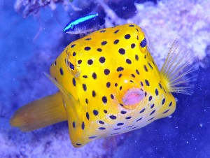 |
kʰuŋi खूङी N सं. Yellow Boxfish; पीले रंग की डब्बानुमा मछली. SD: fish, मछली.
 lɑːe1 लाऽए VAR: lɑɛ-pʰir लाऐफीर. N सं. shark; शार्क. SD: fish, मछली. SEE: lɑːe2 ‘sugarcane’ ‘गन्ना लाऽएhm:{2}’.
lɑːe1 लाऽए VAR: lɑɛ-pʰir लाऐफीर. N सं. shark; शार्क. SD: fish, मछली. SEE: lɑːe2 ‘sugarcane’ ‘गन्ना लाऽएhm:{2}’.
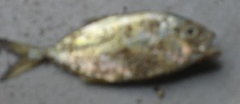 |
lepʰecoŋe लेफेचोङे N सं. a kind of fish; एक प्रकार की मछली. SD: fish, मछली.
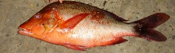 |
lioʈ लीओट VAR: liyoːʈ लीयोऽट. N सं. a kind of red fish; एक प्रकार की लाल बेदकी मछली. SD: fish, मछली.
 |
liʈʰu लीठू VAR: liːʈtu लीऽट्तू. N सं. Muscle fish; स्याही मछली. SD: fish, मछली.
liuši लीऊशी VAR: liyuːwsi लीयूऽवसी. N सं. a type of fish; एक प्रकार की मछली. SD: fish, मछली. NT: This fish jumps and lays eggs simultaneously. ऐसी मछली जो उछल-उछल कर अण्डे देती है।.
 |
 mɑr मार VAR: mɑːr माऽर. N सं. a type of fish; एक प्रकार की मछली. SD: fish, मछली.
mɑr मार VAR: mɑːr माऽर. N सं. a type of fish; एक प्रकार की मछली. SD: fish, मछली.
 |
mɑrtɑrɑbulu मारताराबूलू MORPH: mɑr-tɑrɑ-bulu. N सं. a kind of fish; एक प्रकार की मछली. SD: fish, मछली.
 |
mɛʈo मैटो N सं. fish found in sweet spring water; झरने के मीठे जल में पायी जाने वाली मछली. SD: fish, मछली.
 |
 mirit2 मीरीत N सं. parrotfish; तोता मछली. SD: fish, मछली. SEE: mirit1 ‘bird’ ‘पक्षी मीरीतhm:{1}’.
mirit2 मीरीत N सं. parrotfish; तोता मछली. SD: fish, मछली. SEE: mirit1 ‘bird’ ‘पक्षी मीरीतhm:{1}’.
ŋɑʈɑit ङाटाईत N सं. area between the cheeks and gills of a fish; मछली के गालों और फेफड़ों के बीच का भाग. SD: fish, मछली, body part term, शारीरिक अंग शब्दावली.
 ŋucɑ ङूचा N सं. parrotfish (big); बड़ी तोता मछली. SD: fish, मछली.
ŋucɑ ङूचा N सं. parrotfish (big); बड़ी तोता मछली. SD: fish, मछली.
 |
 ɲure ञूरे VAR: ɲiure ञीऊरे. N सं. eel; Mangur fish, a freshwater fish; सर्पमीन; मांगूर मछली, मीठे पानी की मछली. SD: fish, मछली.
ɲure ञूरे VAR: ɲiure ञीऊरे. N सं. eel; Mangur fish, a freshwater fish; सर्पमीन; मांगूर मछली, मीठे पानी की मछली. SD: fish, मछली.
occe ओच्चे MORPH: ot-ce. Etym: Khora; खोरा. N सं. bone of fish; मछली का कांटा. SD: fish, मछली, body part term, शारीरिक अंग शब्दावली.
oːkrɑ ओऽकरा N सं. Phamfret fish; एक प्रकार की मछली. SD: fish, मछली.
olmo ओल्मो N सं. shark; शार्क मछली. SD: fish, मछली.
olmɔšɑr ओल्मौशार Etym: Bo. N सं. rotten fish; सड़ी हुई मछली जो औषधी के काम आती है. SD: fish, मछली.
olomo ओलोमो N सं. a kind of fish; एक प्रकार की मछली. SD: fish, मछली.
orɑ ओरा N सं. shark, small; छोटी शार्क मछली. SD: fish, मछली.
ɔfɔt औफौत N सं. a big edible sea fish; एक बड़ी समुद्री खाद्य मछली. SD: fish, मछली.
ɔrɔːnɑrɑ औरौऽनारा N सं. Badder fish; एक तरह की मछली. SD: fish, मछली.
pʰɑrɑŋɔ2 फाराङौ N सं. Grouper fish (small); एक प्रकार की छोटी मछली. SD: fish, मछली. SEE: pʰɑrɑŋɔ1 ‘firewood tree’ ‘पेड़, जो ईंधन के काम आता है फाराङौhm:{1}’.
pʰɑrɑʈoʈmo फाराटोटमो N सं. a kind of fish; Dingra fish; एक प्रकार की मछली, दींगरा मछली. SD: fish, मछली.
 pʰecɔ फेचौ VAR: pʰicco फीच्चो. N सं. Shankar fish; शंकर मछली. SD: fish, मछली.
pʰecɔ फेचौ VAR: pʰicco फीच्चो. N सं. Shankar fish; शंकर मछली. SD: fish, मछली.
pʰeno फेनो VAR: peno पेनो. N सं. a variety of Manta ray; एक प्रकार की शंकर मछली. SD: fish, मछली. NT: The tail of this fish has a stinger on it. इस मछली की पूंछ में कांटा होता है।.
pʰɛco फैचो N सं. a variety of Manta ray; एक प्रकार की शंकर मछली. SD: fish, मछली.
pʰiku फीकू N सं. Stone fish, a saltwater fish; खारे पानी की पत्थर मछली. SD: fish, मछली.
 |
 pʰini फीनी N सं. a kind of fish; एक प्रकार की मछली. SD: fish, मछली.
pʰini फीनी N सं. a kind of fish; एक प्रकार की मछली. SD: fish, मछली.
pʰirtɑrɑʈɔ फीरताराटौ N सं. a kind of black fish; एक प्रकार की काली मछली. SD: fish, मछली.
 pʰirʈɔlo फीरटौलो N सं. a kind of fish; एक प्रकार की मछली. SD: fish, मछली.
pʰirʈɔlo फीरटौलो N सं. a kind of fish; एक प्रकार की मछली. SD: fish, मछली.
 |
 pʰoleʈ फोलेट VAR: pʰolweʈ फोल्वेट. N सं. manta ray, a kind of fish; शंकर मछली. SD: fish, मछली.
pʰoleʈ फोलेट VAR: pʰolweʈ फोल्वेट. N सं. manta ray, a kind of fish; शंकर मछली. SD: fish, मछली.
 |
 pʰoʈɔm फोटौम VAR: pʰoʈoŋ फोटोङ. N सं. a kind of fish; बेदनी मछली. SD: fish, मछली.
pʰoʈɔm फोटौम VAR: pʰoʈoŋ फोटोङ. N सं. a kind of fish; बेदनी मछली. SD: fish, मछली.
pɔtɛʈ पौतैट N सं. a kind of fish; एक प्रकार की शंकर मछली. SD: fish, मछली.
 rɛbiʈ रैबीट VAR: rɑbiɖ राबीड; rebeːʈ रेबेऽट. N सं. Angler fish; एक प्रकार की मछली. SD: fish, मछली. NT: A fish which is seen at night and which has two antennae. ऐसी मछली जो मध्य रात्रि में दिखती है और जिसके सिर पर दो ऐन्टेना जैसी बनावट होती है।.
rɛbiʈ रैबीट VAR: rɑbiɖ राबीड; rebeːʈ रेबेऽट. N सं. Angler fish; एक प्रकार की मछली. SD: fish, मछली. NT: A fish which is seen at night and which has two antennae. ऐसी मछली जो मध्य रात्रि में दिखती है और जिसके सिर पर दो ऐन्टेना जैसी बनावट होती है।.
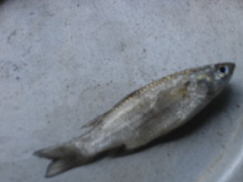 |
rousu रोऊसू VAR: roːwsu रोऽवसू. N सं. a kind of black fish; काली कोक्कारी मछली. SD: fish, मछली.
širo pʰoʈoŋ शीरो फोटोङ N सं. Bedni fish (big); बड़ी बेदनी मछली. SD: fish, मछली.
sirobun सीरोबून MORPH: sirobun. N सं. shark, big; बड़ी शार्क मछली. SD: fish, मछली.
široʈʰɛt शीरोठैत N सं. a kind of sea fish that looks like Surmai fish; समुद्री मछली जो सुरमई मछली सी दिखती है. SD: fish, मछली.
 širuroʈo शीरूरोटो MORPH: širu-roʈo. VAR: šire-rɔʈo शीरे रौतो. N सं. flying fish; उड़ने वाली मछली. SD: fish, मछली.
širuroʈo शीरूरोटो MORPH: širu-roʈo. VAR: šire-rɔʈo शीरे रौतो. N सं. flying fish; उड़ने वाली मछली. SD: fish, मछली.
 šop शोप N सं. a kind of fish which is a bigger version of the Grouper fish; एक प्रकार की मछली जो फाराङ मछली का बड़ा रूप होती है. SD: fish, मछली.
šop शोप N सं. a kind of fish which is a bigger version of the Grouper fish; एक प्रकार की मछली जो फाराङ मछली का बड़ा रूप होती है. SD: fish, मछली.
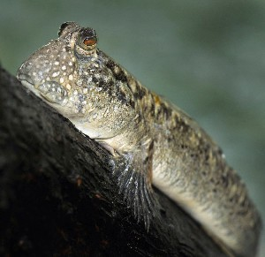 |
šyuɖimu श्यूडीमू N सं. Mudskipper; एक प्रकार की मछली. SD: fish, मछली.
tɑjiocor ताजीओचोर VAR: ʈɑjiɔcɔr टाजीऔचौर. N सं. small fish, lit. living creature with scales; छोटी मछली. tɑjio-cor bi-kʰijire ताजीओ चोर बी खीजीरे. fish swim in the water. मछली पानी में घूमती है।.  tɑjio cɔrbe luŋum ताजीओ चौरबे लूङूम. I catch fish. मैं मछली पकड़ती हूं।. SD: fish, मछली. NT: Fodder; used as bait to catch larger fish. इस मछली का प्रयोग चारे के रूप में बड़ी मछलियां पकड़ने में किया जाता है।.
tɑjio cɔrbe luŋum ताजीओ चौरबे लूङूम. I catch fish. मैं मछली पकड़ती हूं।. SD: fish, मछली. NT: Fodder; used as bait to catch larger fish. इस मछली का प्रयोग चारे के रूप में बड़ी मछलियां पकड़ने में किया जाता है।.
 tɑjioɖop ताजीओडोप N सं. raw fish; कच्ची मछली. SD: fish, मछली.
tɑjioɖop ताजीओडोप N सं. raw fish; कच्ची मछली. SD: fish, मछली.
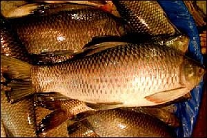 |
 tɑjiototcɔr ताजीओतोत्चौर N सं. a kind of fish; एक प्रकार की मछली. SD: fish, मछली.
tɑjiototcɔr ताजीओतोत्चौर N सं. a kind of fish; एक प्रकार की मछली. SD: fish, मछली.
tɑjiototcɔrleo ताजीओतोतचौरलेओ MORPH: tɑjio-tot-cɔr-leo. N सं. a kind of very small fish; एक प्रकार की बहुत छोटी मछली. SD: fish, मछली.
 tɑjiototcɔrtirkʰuru ताजीओतोतचौरतीरखूरू MORPH: tɑjio-tot-cɔr-tir-kʰuru. N सं. fish, big; बड़ी मछली. SD: fish, मछली.
tɑjiototcɔrtirkʰuru ताजीओतोतचौरतीरखूरू MORPH: tɑjio-tot-cɔr-tir-kʰuru. N सं. fish, big; बड़ी मछली. SD: fish, मछली.
 |
 tɑjiotutbec2 ताजीओतूत्बेच MORPH: tɑjio-tut-bec. VAR: tɑjio-tot-bec ताजिओतोत्बेच; tɑːjiyo-tot-beːc ताऽजीयोतोत्बेऽच. N सं. fish, living creature with hair or scales such as fish; बाल या छिलका युक्त जीव जैसे मछली आदि. SD: fish, मछली, edible item, खाद्य सामग्री. SEE: tɑjiotutbec1 ‘bird’ ‘पक्षी ताजीओतूत्बेचhm:{1}’.
tɑjiotutbec2 ताजीओतूत्बेच MORPH: tɑjio-tut-bec. VAR: tɑjio-tot-bec ताजिओतोत्बेच; tɑːjiyo-tot-beːc ताऽजीयोतोत्बेऽच. N सं. fish, living creature with hair or scales such as fish; बाल या छिलका युक्त जीव जैसे मछली आदि. SD: fish, मछली, edible item, खाद्य सामग्री. SEE: tɑjiotutbec1 ‘bird’ ‘पक्षी ताजीओतूत्बेचhm:{1}’.
tɑjyototcɔršobo ताज्योतोतचौरशोबो MORPH: tɑjyo-tot-cɔr-šobo. N सं. rotten fish; सड़ी हुई मछली. SD: fish, मछली.
tɑrɑbɔlɔ ताराबौलौ VAR: tɑrɑːboːlɔ ताराऽबोऽलौ; tɑrɑbol ताराबोल. N सं. a variety of Manta ray; एक प्रकार की शंकर मछली. SD: fish, मछली. NT: The tail of this fish is used for making fishing arrows. The fish has poisonous bones. इस मछली की पूंछ मछली पकड़ने के तीर बनाने के काम आती है। इसकी हड्डी विषैली होती है।.
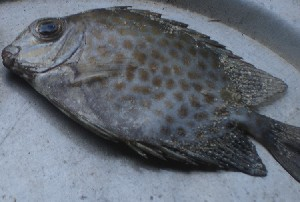 |
tɑrɑkor ताराकोर VAR: tɑrɑkɔr ताराकौर; tɑrɑːkɔːr ताराऽकौऽर. N सं. Stone fish, found in sweet spring water; पत्थर मछली जो झरने के मीठे जल में पायी जाती है. SD: fish, मछली.
tɑːwuʈʈɔ ताऽवूट्टौ N सं. fish (Kahawai); एक प्रकार की मछली. SD: fish, मछली.
tɛlebo तैलेबो N सं. Dandush fish; दंदूश मछली. SD: fish, मछली.
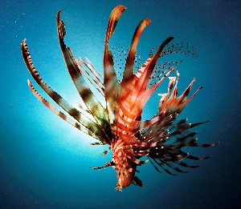 |
tɛrʈɔʈɔ तैरटौटौ VAR: tɛrʈʰo तैरठो. N सं. Lion fish, a red coloured fish; मुर्गा मछली, लाल रंग की मछली. SD: fish, मछली.
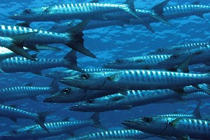 |
tɛwebo तैवेबो N सं. Barracuda fish; एक प्रकार की मछली. SD: fish, मछली.
tocɑl तोचाल VAR: tocol तोचोल. N सं. a kind of freshwater fish; एक प्रकार की मीठे पानी की मछली. SD: fish, मछली.
tʰoːcrɑ ठोऽचरा N सं. a kind of small fish; एक प्रकार की छोटी मछली. SD: fish, मछली.
totbɑi तोत्बाई MORPH: tot-bɑi. N सं. fins, of fish; मछली के गिल. SD: fish, मछली, body part term, शारीरिक अंग शब्दावली.
tɔbokʰe तौबोखे VAR: tɔboːkke तौबोऽक्के. N सं. Dodda fish; डोडा मछली. SD: fish, मछली.
tɔlolo तौलोलो N सं. a kind of fish; एक प्रकार की मछली. SD: fish, मछली.
tɔmɔɲɛ तौमौञै VAR: tommoŋi तोम्मोङी; tomoɲe तोमोञे. N सं. Hatchet fish; एक प्रकार की मछली. SD: fish, मछली. NT: Fish which is seen during twilight. यह मछली पौ फटते ही दिखाई देती है।.
ʈɑjeo ताजेओ Etym: Khora. N सं. fish (generic); मछली. SD: fish, मछली.
ʈɑlɔlo टालौलो N सं. black Bedki fish; बेदकी काली मछली. SD: fish, मछली.
ʈʰɑrŋe ठारङे N सं. a type of fish; एक प्रकार की मछली. SD: fish, मछली.
 |
ʈʰiʈʰerɑ ठीठेरा N सं. a kind of fish; एक प्रकार की मछली. SD: fish, मछली.
ʈok टोक N सं. small fish with coloured polka dots; छोटी मछली जिस पर रंगीन धब्बे होते हैं. SD: fish, मछली.
 ʈomoni टोमोनी N सं. Hatcher fish, a kind of fish with very hard skin; त्वचा वाली मछली. SD: fish, मछली.
ʈomoni टोमोनी N सं. Hatcher fish, a kind of fish with very hard skin; त्वचा वाली मछली. SD: fish, मछली.
ʈɔniu टौनीऊ N सं. a kind of fish; एक प्रकार की मछली. SD: fish, मछली. NT: Found along with prawns in freshwater. मीठे पानी में झींगे के साथ जाल में आ जाती है।.
ʈɔxocoŋ टौखोचोङ N सं. big black Kokkari fish; बड़ी काली कोक्कारी मछली. SD: fish, मछली.
xuɖuŋɔ खूडूङौ N सं. Parshaw fish; पारशाव मछली. SD: fish, मछली.